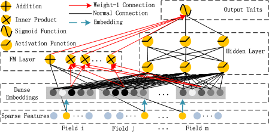

以深度學習預測數位廣告點擊率
研究背景和動機
點擊率預測在任何推薦系統和數位廣告中都扮演著關鍵的角色。預測點擊率能夠幫助廣告主優化資金的配置，從而提高投資報酬。研究方法
一般的機器學習方法在學習用戶行為背後的複雜特徵交互方面存在限制，對低階或高階交互(low order or high order intersection) 存在偏差，並且需要複雜的特徵工程來處理。相反地，DeepFM提出了一種結合了因子分解機（factorization machines）和深度神經網絡優勢的新型神經網絡架構。我在這裡使用DeepCTR-Torch對廣告點擊率做出預測
關於資料
資料使用Kaggle的Click-Through Rate Prediction資料集數據特徵解釋
本次使用的數據集一共包含24個特徵，各特徵所代表的含義如下：
train.head()
研究目標
為何DeepFM和其他深度學習演算法不同？
DeepDM的優點：
-
1. 高維稀疏特徵下交叉仍能估計，可以泛化未被觀察的交叉。
-
2. 訓練時參數學習和模型的預測，時間複雜性時線性的。
-
3. 不需要做特徵工程。
DeepFM Structure
